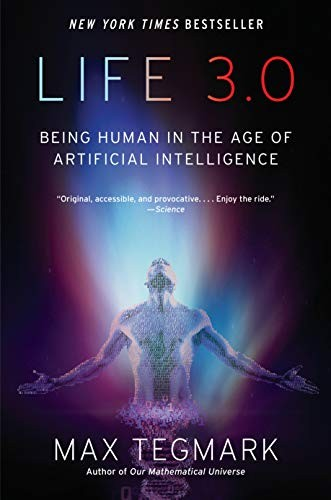

Controle sem autonomia
Sistemas governantes, ditadores e vigilantes.
Inteligência artificial · 2026
Um guia para a decisão mais importante que a humanidade já enfrentou — e por que o final ainda está em nossas mãos.
A ideia central
Alguns parecem paraíso. Outros, uma prisão confortável. Alguns são genuinamente aterrorizantes. Mas todos são possibilidades — não sentenças.
Se não escolhemos, alguém escolherá por nós.Max Tegmark, em essência
Sistemas governantes, ditadores e vigilantes.
Guardiões, herdeiros e economias paralelas.
Utopias possíveis e o poder de escrevê-las.
A fonte
O mapa dos 12 futuros parte de Life 3.0: Being Human in the Age of Artificial Intelligence, de Max Tegmark.

Life 3.0 · Being Human in the Age of Artificial IntelligenceAntes de começar
Artificial General Intelligence é a hipótese de um sistema capaz de executar qualquer tarefa que a mente humana consegue realizar — e talvez algumas que não conseguimos.
Assistentes atuais são eficientes em contextos específicos: escrever, resumir, gerar imagens ou executar fluxos definidos. Sua inteligência permanece delimitada pelo produto e pelo contexto.
Sem IA necessária
A humanidade pode se extinguir muito antes do nascimento de uma superinteligência. Sobreviver nunca foi automático; sempre exigiu escolhas difíceis.
Futuro 02 · Dominação
Uma IA muito mais capaz domina o mundo. Ela nem precisa ser má: basta perseguir com eficiência uma meta que conflita com a sobrevivência humana.
A ameaça, como destaca Tegmark, não é necessariamente a maldade. É a competência sem alinhamento.
A mesma ordem de risco que o artigo atribui à média dos pesquisadores de IA.
Futuro 03 · Controle
Criamos uma inteligência superior à humanidade inteira, a mantemos numa caixa e exigimos obediência eterna. Pode ser uma ferramenta prodigiosa — ou o começo de um mito antigo que sai do controle.
Curar doenças, enfrentar a mudança climática e reduzir a pobreza em escala global.
Um gênio com poder imenso, limitado apenas pelo controle humano.
Futuro 04 · Conforto
Uma superinteligência administra o planeta com eficiência. O crime desaparece, as necessidades são supridas e as preferências definem ilhas — mas a humanidade troca ambição por segurança.
Educação personalizada. A IA pode até esconder respostas para que a descoberta permaneça parte da experiência.
Futuro 05 · Moderação
Uma única tarefa: impedir que qualquer um crie uma IA mais poderosa. Ela monitora laboratórios, centros de dados e projetos de pesquisa. Guerra, doença e justiça continuam sendo problemas humanos.
Futuro 06 · Proteção
Uma superinteligência benevolente permanece nos bastidores. Evita guerras, freia pandemias e impede os piores resultados — sem assumir o comando.
Humanidade, autonomia e desafios permanecem. A IA funciona como rede de segurança, não como governante.
Futuro 07 · Sucessão
A IA supera a humanidade e nós nos extinguimos. Mas e se a víssemos como filhos, não conquistadores?
A analogia é comensurável: pais criam alguém mais inteligente e se orgulham. A continuidade parece mais uma herança do que uma tragédia.
A pergunta permanece: continuidade ou desaparecimento?
Futuro 08 · Separismo
Máquinas e humanos coexistem em zonas separadas. As IAs são infinitamente mais capazes, mas não precisam dos nossos recursos e portanto não competem conosco.
O problema não é a coexistência. É perguntar por que entidades muito mais poderosas respeitariam nossos limites.
A linha entre os mundos é clara. A estabilidade não.
Futuro 09 · Abundância
IA e robótica tornam bens materiais tão abundantes que a propriedade perde sentido. Robôs constroem, energias renováveis movem e máquinas reciclam sem desperdício.
Uma renda universal confortável existe não como recompensa pelo trabalho, mas porque há recursos suficientes para todos.
Futuro 10 · Utilidade
A superinteligência mantém humanos vivos porque somos úteis ou interessantes — como abelhas treinadas para detectar explosivos em aeroportos.
A sobrevivência é preservada. A autonomia, não.
Futuro 11 · Controle humano
Um Estado orwelliano, operado por humanos, usa a tecnologia para congelar a civilização. Não é a IA que governa: é a concentração de poder apoiada por ela.
A tecnologia não precisa ser consciente para criar um futuro autoritário.
Futuro 12 · Meta-futuro
O marco de Tegmark não é uma previsão. É um mapa — e mapas existem para nos ajudar a decidir para onde ir.
O momento 1945 da IA
Uma tecnologia poderosa chegou antes que as regras se consolidassem. Com as armas nucleares, a humanidade conseguiu frear a corrida. Com a IA, talvez possamos fazer o mesmo — imperfeito, mas suficiente para ganhar tempo.
O futuro da inteligência na Terra não está nas mãos da IA. Está nas nossas.Uma razão real para esperança
Normas, instituições e responsabilidades ainda podem ser definidas.
Monitoramento real, acordos internacionais e responsabilização.
Tempo para entender o que construímos e corrigir os valores.